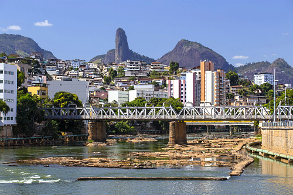

|  |
Cachoeiro de Itapemirim é um município localizado no sul do Espírito Santo, conhecido como a “capital secreta do mundo” e também como a “cidade das cachoeiras” devido à sua rica hidrografia. É o maior polo econômico da região, destacando-se na extração e beneficiamento de mármore e granito, além de possuir relevância no comércio e nos serviços. A cidade é berço do cantor Roberto Carlos, o que reforça sua identidade cultural e turística, atraindo visitantes interessados em sua história e tradições. Com uma população acolhedora e uma geografia marcada por rios, morros e quedas-d’água, Cachoeiro de Itapemirim combina desenvolvimento urbano com belezas naturais.
|
|
A história de Cachoeiro de Itapemirim tem início no século XIX, quando o povoamento da região se consolidou às margens do rio Itapemirim, importante via de transporte para o escoamento de mercadorias e para a ligação com o litoral. O crescimento da cidade foi impulsionado inicialmente pela agricultura, sobretudo com o cultivo do café, que trouxe desenvolvimento econômico e atraiu novos moradores. Com o tempo, Cachoeiro se tornou um polo regional de comércio e serviços, além de se destacar na extração de mármore e granito, atividade que permanece como uma de suas principais marcas. Em 25 de março de 1891, o município foi oficialmente elevado à categoria de cidade, iniciando uma trajetória de expansão urbana, cultural e econômica que a transformou em referência no sul do Espírito Santo.
|